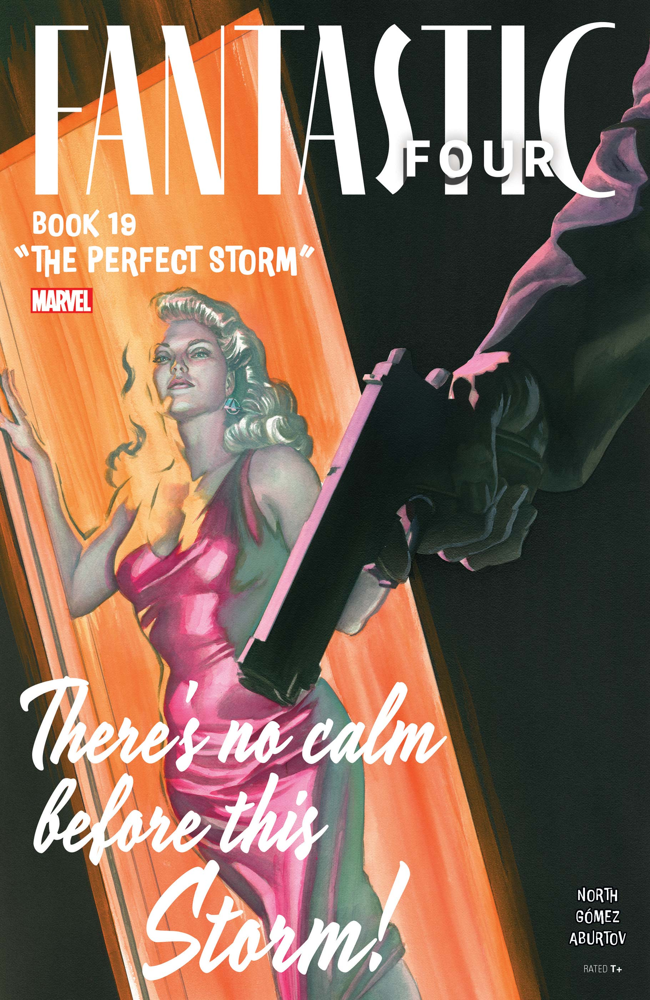

Fantastic Four (2022) #19
PUBLISHED:
April 10, 2024
WRITER:
Ryan North
Parece que ele fez um ato de desaparecimento: um certo “Professor Richards”, um cabeça-dura azarada que, de alguma forma, conseguiu
marcar pontos fora do seu alcance. Eu não queria aceitar o caso dela, mas minha conta bancária dizia o contrário e, além disso: havia algo
nela. Talvez uma sensação de perigo, mas também uma vulnerabilidade. Chame-me de idiota, mas o mundo é um lugar difícil - e eu, eu não queria
tornar as coisas mais difíceis para ela. Claro, não demorou muito para que eu desejasse ter tido o bom senso de manter distância...